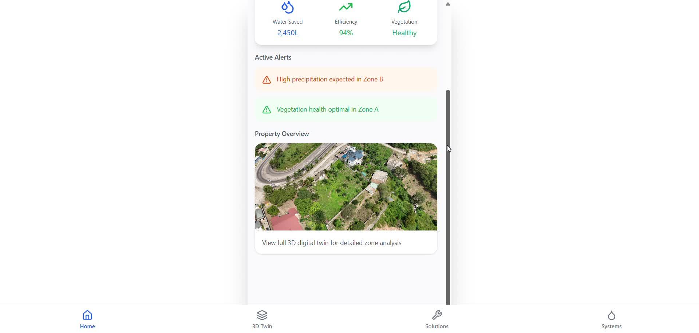

App Demo 01:36HydroTwin — Smart Water Solution & App
Intelligent digital twin and mobile platform integrating GIS and AI to predict urban flooding and evaluate water risk zones. Features 3D catchment terrain models, precipitation alerts, and real-time telemetry. Certified scientific poster at International Space Star Conference & BrainX Top 15.
Slide Deck
Jul 2025 – Present